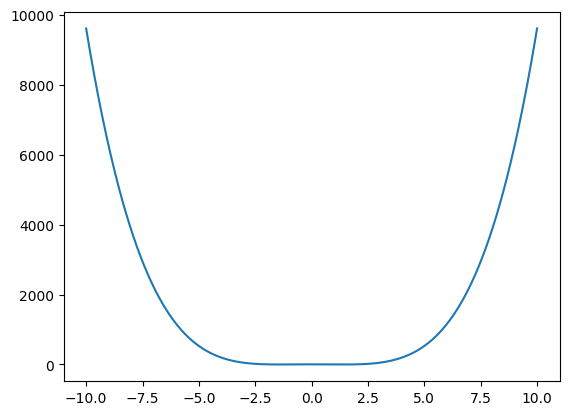

import numpy as np
import matplotlib.pyplot as plt
def h(x):
return x**4 - 4*x**2 + 4
t = np.linspace(-10, 10, 1000)
h_t = h(t)
plt.plot(t,h_t)[<matplotlib.lines.Line2D at 0x7f3ea7da36b0>]
Create a Jupyter notebook and solve each exercise in an individual cell.
Each team must submit the Jupyter notebook and defend it on February 6, 2025. The defense will be carried out by one of the team members chosen at random.
Write a Python program that calculates the mean and median of a list of numbers.
Write a Python program that calculates the standard deviation of a list of numbers.
Write a Python program that uses the matplotlib library to visualize a histogram of a list of numbers.
Write a Python program that calculates the probability of an event occurring given a probability distribution (e.g. normal, binomial).
Write a Python program that calculates the conditional probability of an event occurring given another event.
Write a Python program that applies Bayes’ theorem to update the probability of a hypothesis given new evidence.
Write a Python program that calculates the correlation coefficient between two lists of numbers.
Write a Python program that performs a simple linear regression analysis on a dataset.
Write a Python program that generates random numbers from a specified probability distribution (e.g. normal, uniform).
Generate a python code that allows the visualization (in one figure) of the real (blue) part and the imaginary (red) part, magnitude (green) and phase of the following signals: \[f\left(t\right) = e^{-j10 \pi t}\] \[g\left(t\right) = 10cos\left(2 \pi t\right) + j10sin\left(2 \pi t\right)\]
The visualization must be in the range of t \(\left[-10, 10\right]\)
Generate a python code to show the following step function:
$$f(t) = \[\begin{cases} -t & \text{if } -5 \leq t \leq 0, \\ t & \text{if } 0 \leq t \leq 5, \\ 0 & Otherwise \end{cases}\]$$
The visualization must be in the range of t \(\left[-10, 10\right]\)
Download a record from the Physionet database EEG Signals from an RSVP Task (itrsvp) and create a script that enables the visualization of all the signals contained in the record. Make sure to use the correct amplitude and time units.
Determine the numerical derivative of the function h, represented as \(\left(\frac{dh}{dt}\right)\), via finite difference approximation. Subsequently, contrast this result with the numerical evaluation of the symbolic derivative, derived through analytical differentiation, to assess the precision of the numerical approach
Determine the numerical integration of the function f, represented as \(\left(\int_{-10}^{10}{h(t)dt}\right)\), via trapezoidal rule. Subsequently, contrast this result with the numerical evaluation of the symbolic integral, derived through analytical differentiation, to assess the precision of the numerical approach
Solve the ODE \(\frac{dy}{dx} = 2x - 3y\) with initial condition y(0) = 1 using Euler’s Method. With a step 0f 0.1. Suppose that: \(x \in \left[0, 10\right]\) and \(y \in \left[1, 10\right]\)
Minimize the function f(x) = x^4 - 4x^2 + 4 using Gradient Descent.